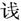
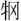

卒。
卒。春秋公羊传卷十四
文公下
文公十年
春，王三月辛卯，臧孙辰卒。
夏，秦伐晋。
楚杀其大夫宜申。
自正月不雨，至于秋七月。
及苏子盟于女栗。
冬，狄侵宋。
楚子、蔡侯次于屈貉。
文公十一年
春，楚子伐圈。
夏，叔彭生会晋郤缺于承匡。
秋，曹伯来朝。
公子遂如宋。
狄侵齐。
冬十月甲午，叔孙得臣败狄于咸。狄者何？长狄也。兄弟三人，一者之齐，一者之鲁，一者之晋。其之齐者，王子成父杀之。其之鲁者，叔孙得臣杀之。则未知其之晋者也。其言败何？大之也。其日何？大之也。其地何？大之也。何以书？记异也。
文公十二年
春，王正月，盛伯来奔。盛伯者何？失地之君也。何以不名？兄弟辞也。
杞伯来朝。
二月庚子，子叔姬卒。此未适人何以卒？许嫁矣。妇人许嫁，字而笄之，死则以成人之丧治之。其称子何？贵也。其贵奈何？母弟也。
夏，楚人围巢。
秋，滕子来朝。
秦伯使遂来聘。遂者何？秦大夫也。秦无大夫，此何以书？贤缪公也。何贤乎缪公？以为能变也。其为能变奈何？惟善竫言。俾君子易怠。而况乎我多有之，惟一介断断焉无他技。其心休休。能有容是难也。
冬十有二月戊午，晋人、秦人战于河曲。此偏战也，何以不言师败绩？敌也。曷为以水地？河曲疏矣，河千里而一曲也。
季孙行父帅师城诸及运。
文公十三年
春，王正月。
夏五月壬午，陈侯朔卒。
邾娄子蘧篨卒。
自正月不雨至于秋七月。
世室屋坏，世室者何？鲁公之庙也。周公称大庙，鲁公称世室，群公称宫。此鲁公之庙也，曷为谓之世室？世室犹世室也，世室不毁也。周公何以称大庙于鲁？封鲁公以为周公也。周公拜乎前 ，鲁公拜乎后。曰：“生以养周公，死以为周公主。”然则周公之鲁乎？曰：“不之鲁也。封鲁公以为周公主。”然则周公曷为不之鲁？欲天下之一乎周也。鲁祭周公何以为牲？周公用白牲，鲁公用骍。群公不毛。鲁祭周公何以为盛？周公盛，鲁公焘，群公廪。世室屋坏何以书？讥。何讥尔？久不修也。
冬，公如晋。
卫侯会于沓。
狄侵卫
十有二月己丑，公及晋侯盟。
还自晋。
郑伯会公于斐。还者何？善辞也。何善尔？往党，卫侯会公于沓，至得与晋侯盟。反党，郑伯会公于斐，故善之也。
文公十四年
春，王正月，公至自晋。
邾娄人伐我南鄙。
叔彭生帅伐邾娄。
夏五月乙亥，齐侯潘卒。
六月，公会宋公、陈侯、卫侯、郑伯、许男、曹伯、晋赵盾，癸酉，同盟于新城。
秋七月，有星孛入于北斗。孛者何？彗星也。其言入于北斗何？北斗有中也。何以书？记异也。
公至自会。
晋人纳接菑于邾娄，弗克纳。纳者何？入辞也。其言弗克纳何？大其弗克纳也。何大乎其弗克纳？晋郤缺帅师，革车八百乘，以纳接犂于邾娄，力沛若有余而纳之。邾娄人言曰：“接菑，晋出也，貜且，齐出也。子以其指，则接菑也四，貜且也六。子以大国压之，则未知齐、晋孰有之也。贵则皆贵矣。虽然，貜且也长。”郤缺曰：“非吾力不能纳也，义实不尔克也。”引师而去之，故君子大其弗克纳也。此晋郤缺也，其称人何？贬。曷为贬？不与大夫专废置君也。曷为不与？实与而文不与。文曷为不与？大夫之义不得专废置君也。
九月甲申，公孙敖卒于齐。
齐公子商人弑其君舍。此未逾年之君也，其言弑君舍何？己立之，己杀之，成死者，而贱生者也。
宋子哀来奔。宋子哀者何？无闻焉尔。
冬，单伯如齐，齐人执单伯，齐人执子叔姬。执者曷为或称行人？或不称行人？称行人而执者，以其事执也。不称行人而执者，以己执也。单伯之罪何？道淫也。恶乎淫？淫乎子叔姬。然则曷为不言齐人执单伯及子叔姬？内辞也，使若异罪然。
文公十五年
春，季孙行父如晋。
三月，宋司马华孙来盟。
夏，曹伯来朝。
齐人归公孙敖之丧。何以不言来？内辞也。胁我而归之，筍将而来也。
六月辛丑朔，日有食之，鼓用牲于社。
单伯至自齐。
晋郤缺帅师伐蔡，戊申，入蔡。入不言伐，此其言伐何？至之日也。其日何？至之日也。
秋，齐人侵我西鄙。
季孙行父如晋。
冬十有一月，诸侯盟于扈。
十有二月，齐人来归子叔姬。其言来何？闵之也。此有罪，何闵尔？父母之于子，虽有罪，犹若其不欲服罪然。
齐侯侵我西鄙，遂伐曹，入其郛。郛者何？恢郭也。入郛书乎？曰不书。入郛不书，此何以书？动我也。动我者何？内辞也。其实我动焉尔。
文公十六年
春，季孙行父会齐侯于阳谷，齐侯弗及盟。其言弗及盟何？不见与盟也。
夏五月，公四不视朔。公曷为四不视朔？公有疾也。何言乎公有疾不视朔？自是公无疾不视朔也。然则曷为不言公无疾不视朔？有疾犹可言也。无疾不可言也。
六月戊辰，公子遂及齐侯盟于犀丘。
秋八月辛未，夫人姜氏薨。
毁泉台。泉台者何？郎台也。郎台则曷为谓之泉台？未成为郎台，既成为泉台。毁泉台何以书？讥。何讥尔？筑之讥，毁之讥。先祖为之，己毁之，不如勿居而已矣。
楚人、秦人、巴人灭庸。
冬十有一月，宋人弑其君处臼。弑君者曷为或称名氏？或不称名氏？大夫弑君称名氏，贱者穷诸人，大夫相杀称人，贱者穷诸盗。
文公十七年
春，晋人、卫人、陈人、郑人伐宋。
夏四月癸亥，葬我小君圣姜。圣姜者何？文公之母也。
齐侯伐我西鄙。
六月癸未，公及齐侯盟于谷。
诸侯会于扈。
秋，公至自谷。
公子遂如齐。
文公十八年
春，王二月丁丑，公薨于台下。
秦伯卒。
夏五月戊戌，齐人弑其君商人。
六月癸酉，葬我君文公。
秋，公子遂，叔孙得臣如齐。
冬十月，子卒。子卒者孰谓？谓子赤也。何以不日？隐之也。何隐尔？弑也。弑则何以不日？不忍言也。
夫人姜氏归于齐。
季孙行父如齐。
莒弑其君庶其。称国以弑何？称国以弑者，众弑君之辞。